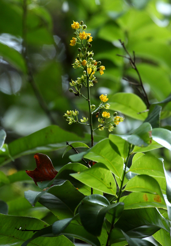

Ixonanthaceae
(No widely accepted common name)
Ixonanthaceae is a small family of dicotyledonous flowering plants, comprising trees and shrubs native to the tropics. Placed in the order Malpighiales, the family is characterized by simple, often stipulate leaves, 5-merous flowers typically possessing a nectar disc, and capsular fruits which are sometimes winged.
Overview
The Ixonanthaceae family includes about 4-5 genera and approximately 21-30 species of trees and shrubs. They are found in tropical regions of South America, Africa, Madagascar, and Southeast Asia/Malesia. These plants typically inhabit lowland tropical rainforests and sometimes savannas or secondary forests.
Members of this family are woody plants with simple leaves that usually have stipules (small leaf-like appendages at the base of the petiole). The flowers are relatively small, radially symmetrical, and possess 5 petals and sepals. A nectar disc is usually present, and the number of stamens can vary (5, 10, or 20). The fruit is typically a capsule that splits open to release seeds, which are sometimes winged or arillate (having a fleshy appendage).
Economically, the family is of minor importance, though some species provide timber (e.g., Ixonanthes). Phylogenetically, Ixonanthaceae is placed within the large and diverse order Malpighiales, belonging to the Rosid clade of eudicots. Its exact relationships within Malpighiales have been explored using molecular data, often linking it with families like Rhizophoraceae and Erythroxylaceae.
Quick Facts
- Scientific Name: Ixonanthaceae Planch. ex Miq.
- Common Name: (None widely accepted)
- Number of Genera: Approximately 4-5
- Number of Species: Approximately 21-30
- Distribution: Pantropical (South America, Africa, Madagascar, SE Asia/Malesia)
- Evolutionary Group: Eudicots - Rosids - Malpighiales
Key Characteristics
Growth Form and Habit
Evergreen trees or shrubs.
Leaves
Leaves are simple, usually alternate or spirally arranged, petiolate, with margins typically entire or crenate/serrate. Small stipules are usually present, often deciduous.
Inflorescence
Flowers are borne in axillary or terminal cymes, which may be arranged in panicles or clusters.
Flowers
Flowers are typically bisexual (sometimes unisexual), actinomorphic (radially symmetrical), and usually 5-merous (rarely 4-merous). Key features include:
- Calyx: 5 (rarely 4) sepals, usually fused at the base, persistent.
- Corolla: 5 (rarely 4) petals, free, often white, yellow, or reddish.
- Androecium: Stamens number 5 (then often opposite the petals), 10, or 20, inserted outside or on the nectar disc.
- Nectar Disc: An annular or cup-shaped nectar disc is usually present, typically extrastaminal or intrastaminal.
- Gynoecium: Ovary is superior, composed of 2-5 fused carpels forming 2-5 locules. Placentation is axile, with 1 or 2 ovules per locule. A single style is present, sometimes short, with a capitate or slightly lobed stigma.
Fruits and Seeds
The fruit is typically a loculicidal capsule, often oblong or spindle-shaped, sometimes woody or leathery. The central column (columella) often persists after the valves fall away. Seeds may be winged or possess an aril.
Chemical Characteristics
The family may contain tannins and saponins. Aluminium accumulation has been reported in some species.
Field Identification
Identifying Ixonanthaceae involves looking for a combination of woody habit, leaf features, flower structure, and fruit type:
Primary Identification Features
- Habit: Trees or shrubs of tropical forests.
- Leaves: Simple, usually alternate, with stipules (may be fallen).
- Flowers: 5-merous, actinomorphic, with a nectar disc.
- Stamens: Number varies (5, 10, or 20).
- Ovary Position: Ovary is superior.
- Fruit Type: Fruit is a capsule (often loculicidal), sometimes with winged seeds or arils.
Secondary Identification Features
- Leaf Margin: Check if entire or crenate/serrate.
- Inflorescence Type: Cymes, often arranged in panicles.
- Seed Appendages: Look for wings or arils on seeds if capsules are open.
- Habitat: Tropical rainforests.
Seasonal Identification Tips
- Flowering/Fruiting Season: Varies geographically within the tropics. Flowers are often small, but capsules can be more conspicuous when mature or dehiscing.
- Vegetative State: The combination of tree/shrub habit, simple alternate stipulate leaves can narrow possibilities, but confirmation often requires reproductive structures.
Common Confusion Points
Ixonanthaceae can be confused with other tropical woody families within Malpighiales or other orders:
- Rhizophoraceae / Erythroxylaceae: Closely related families in Malpighiales. Rhizophoraceae often have opposite leaves and different fruit types (berries or viviparous seedlings in mangroves). Erythroxylaceae often have distinctive stipules and drupaceous fruits.
- Celastraceae (Bittersweet family): Often have opposite leaves, flowers with prominent discs, and capsules often with brightly colored arillate seeds.
- Euphorbiaceae (Spurge family): Highly diverse, but often have unisexual flowers, frequently 3-lobed fruits (schizocarps), and sometimes latex.
- Linaceae (Flax family): Includes some woody tropical genera (e.g., Hugonia), but often have different stamen arrangements (e.g., fused filament tube) and fruit types.
Field Guide Quick Reference
Look For:
- Tropical trees or shrubs
- Leaves simple, usually alternate, stipulate
- Flowers 5-merous with nectar disc
- Stamens 5, 10, or 20
- Superior ovary
- Fruit a capsule
Key Variations:
- Stamen number
- Leaf margin (entire/crenate)
- Seed features (winged/arillate)
- Specific disc shape
Notable Examples
The family includes a few genera found across the tropics.

Ixonanthes reticulata
(Various local names)
A common species of the genus Ixonanthes, found in Southeast Asia and Malesia. A tree often found in peat swamp forests or secondary forests. Provides timber known locally. Features small flowers and oblong capsules.

Ochthocosmus africanus
(Various local names)
A species representing the genus Ochthocosmus, found in tropical Africa. Typically a shrub or small tree of forests or savannas. Flowers have 10 stamens.

Phyllocosmus africanus
(Various local names)
Represents the genus Phyllocosmus, also found in tropical Africa. Similar to Ochthocosmus but sometimes distinguished by floral details (e.g., stamen number potentially 20 in some species). Shrubs or trees.

Cyrillopsis paraensis
(Various local names)
Represents the genus Cyrillopsis, found in tropical South America (e.g., Brazil, Venezuela). Trees with flowers having 5 stamens opposite the petals.
Phylogeny and Classification
Ixonanthaceae is placed in the large order Malpighiales, within the Rosid clade of eudicots. This order contains a vast array of families (~40) with diverse morphologies and ecological roles.
Molecular phylogenetic studies place Ixonanthaceae within a specific subgroup of Malpighiales. It is often found to be closely related to families like Rhizophoraceae (mangrove family), Erythroxylaceae (coca family), and potentially Linaceae (flax family), although the exact relationships can vary slightly between studies. It is clearly distinct from the Asterid families (like Icacinaceae) and Monocot families (like Ixioliriaceae) discussed previously.
Position in Plant Phylogeny
- Kingdom: Plantae
- Clade: Angiosperms (Flowering plants)
- Clade: Eudicots
- Clade: Rosids
- Order: Malpighiales
- Family: Ixonanthaceae
Evolutionary Significance
Ixonanthaceae contributes to our understanding of Rosid evolution:
- Malpighiales Diversity: Represents one of the smaller woody lineages within the highly diverse Malpighiales order.
- Biogeography: Its pantropical distribution suggests ancient origins and dispersal across Gondwana or subsequent long-distance events.
- Morphological Traits: The combination of stipulate leaves, flowers with nectar discs, variable stamen numbers, and capsular fruits represents a specific character suite within its clade.
- Phylogenetic Refinement: Studying Ixonanthaceae helps resolve relationships among families within the complex Malpighiales order.